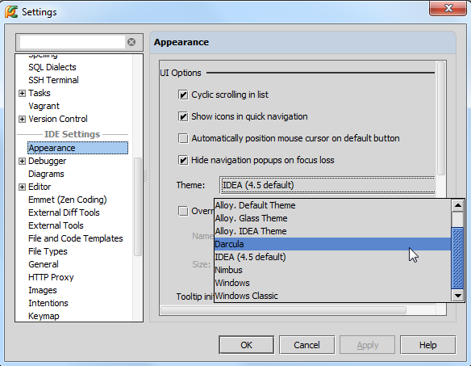
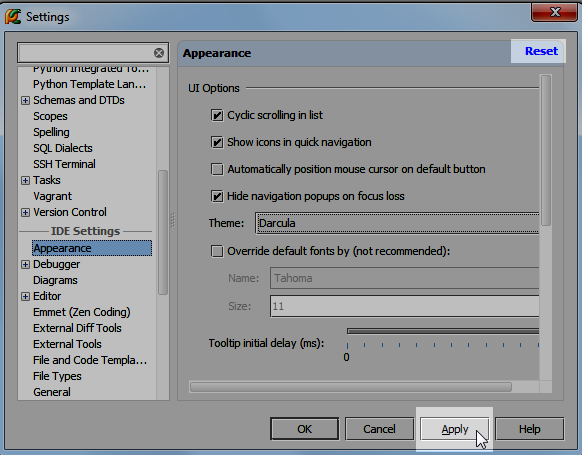
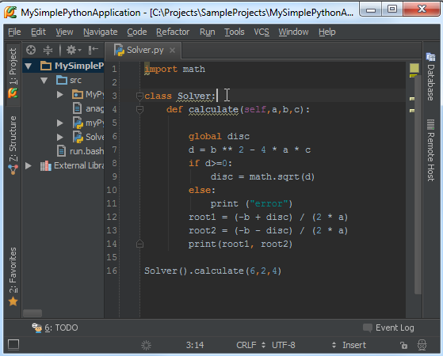
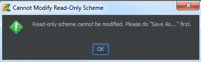
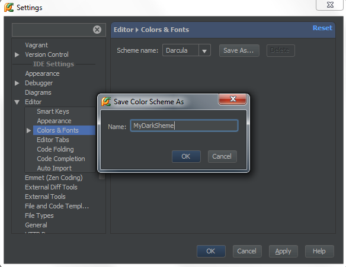
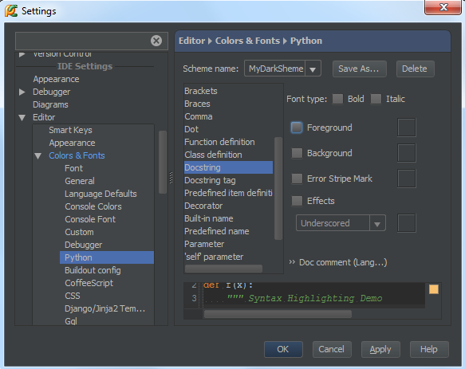
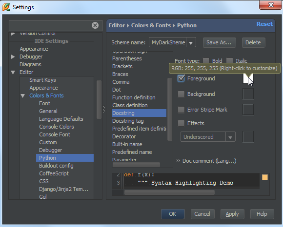
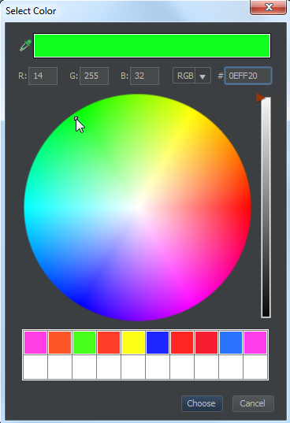
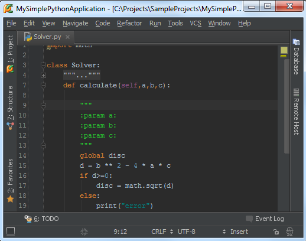
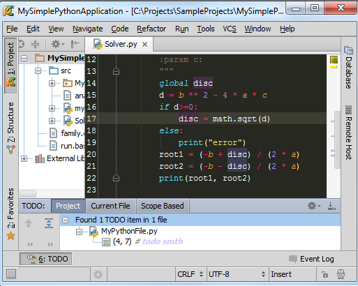

最全Pycharm教程（1）——定制外观
最全Pycharm教程（4）——有关Python解释器的相关配置
Pycharm作为一款强力的Python IDE，在使用过程中感觉一直找不到全面完整的参考手册，因此决定对官网的Pycharm教程进行简要翻译，与大家分享。
1、准备工作
首先确定你安装了2.7或者更高版本的Pycharm（下载地址），下载时请根据你的系统平台下载对应版本即可。
2、如何选择Pycharm的外观
Pycharm预定义了几种主题模式，可用主题的数量与操作系统类型有关，你可以参照外观说明（参照说明）在“Settings/Preferences”对话框中进行相关设置。
背景主题的具体设置方法如下：
（1）在主工具栏中，单击来打开“Settings/Preferences”，然后单击参照说明：
（2）在下面的对话框中，单击“Theme”对应的下拉菜单，然后选择一个你喜欢的主题：

注意此时位于对话框右上角的Reset按钮，如果你改变了注意，可以通过单击这个按钮来恢复之前的设置。同时当你将鼠标移动至Apply按钮时，它将变为可用状态：

当然你也可以更改其他外观设置，例如字体和字号、窗口属性等。
3、应用更改设置，建议重启Pycharm软件（例如当你将主题改为 Darcula时，冲击之后将是下面这种效果）：

4、如何更改编辑框的主题颜色
在更改完Pycharm的主题背景之后，你可能对编辑器的外观仍不满意，例如你希望将文档字符串改变为另外一种颜色，下面介绍具体更改方法：
首先，我们再次单击工具栏上的图标进入“Settings/Preferences”对话框，展开“Editor”节点，然后单价“Color and Font”，发现系统提示我们当前并不能更改预定义的字体主题，也就意味着我们必须先要对它复制一份：

单击“Save as”按钮，然后键入一个新的字体框架名称：

现在我们发现我们所新建的字体类型变为可编辑状态，我们可以根据自己的喜好对它进行修改。
展开“Color and Font”节点，进入编辑器设置对话框：

首先，在语言空间的下拉列表中，单击选择当前文档字符串的字体类型，通过预览窗口我们可以简单预览当前设置的视觉效果。
值得一提的是，如果你想将字体颜色由深绿色改为其他颜色的话，只需勾选“Foreground”复选框，然后右击或者双击右侧的颜色块：

接下来再弹出的调色板中选择选择一种颜色：

OK，应用设置，然后我们发现我们选中的颜色成功用于字体的显示：

5、软件主题和编辑框字体主题的区别
留意这两个主题之前的区别，前者是于整个软件相关的，而后者只是应用于编辑框部分的属性更改，我们完全可以将这个IDE的主题设置为亮色（例如Default or Alloy）同时将编辑框设置为一个深色主题（例如Twilight or Monokai），这样的效果就是Pycharm的控件都显示为亮色，而编辑窗口显示为暗色：
